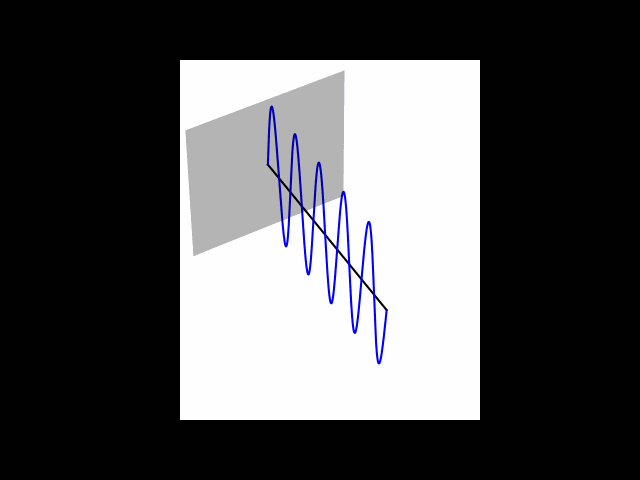
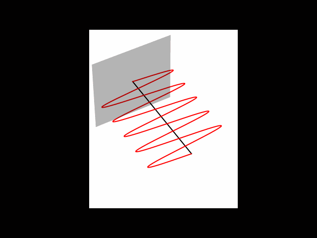
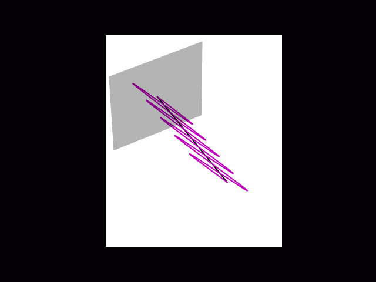

Lecture 2: From Bits to Qubits#
Warning
These lecture notes are a work in progress and are not a replacement for watching the lecture video, it’s intended to be a supplementary reading after watching the lecture.
Learning outcomes
In this lecture we revise the good old and simpler concepts of bits and their manipulations to set the stage for the fundamental blocks of quantum computing, i.e., qubits and their manipulation. As we go through the sections below, we will:
Learn the features of bits and qubits from phenomenological perspective, and through comparison of their similarities and differences. - We will also learn how manipulating bits and a qubits forms a building block for basic computations.
Introduction#
In classical computing, which we usually call just computing, we transform or map every mathematical problem into a sequence of tasks, which is performed by computer, and towards the end, we get the desired result. These sequences of tasks, are what we call algorithms, consists of an exact sequence of simpler tasks that can be understood by computer. When this exact sequence is expressed in a way that computer understand, we call it a computer program. To understand, and organise well, the algorithms are often broken down to smallest possible building blocks. We will discuss some of these building blocks now, and see how the role of bits comes into play.
Binary Data#
Most algorithms require an input in some form, which is required to feed into the algorithm, and we get some result in the end. For example, addition is an algorithm, that requires input of two numbers, and gives the result, that is the sum of two numbers.
graph LR;
A(Input) --> |Feed into| B{Algorithm} --> |Computation finished| C(Result)
a(12) & b(15) --> add{Addition} --> sum(27)
The input information, can in principle be anything, however over the decades we have learnt to represent it in some standardised format which is easily understood by computers. For most applications, the input can be broken down to a list or collection of simpler objects, and the simpler objects are either a number, or a text. The numbers themselves can be integers, or real numbers. The text can be english, or any other language, and within each language, a text is an ordered sequence of characters of alphabets and symbols.
Bit#
The smallest unit of input, logically for us, and also for a computer, is something called bit that is mapped to True or False. This minimalistic information exist as one of the two mutually exclusive possibilities. Below are some more examples of such pair of possible ‘states’.
graph TD;
True <---> False;
Head <---> Tail;
Yes <---> No;
Good <---> Bad;
Like <---> Dislike;
1 <---> 0;
Physical Representation and why Quantum#
The above are some of the daily life analogies of properties/informations that can be described by choosing one of the two possibilities. We say that such properties have 1 bit of information, and the two states are usually represented as 0 and 1. More and complex information can be represented by multitude of such bits, and is usually stored in computers, or other forms of modern storage using technologies which can (i) prepare an object in one of two clearly distinguishable physical states, and (ii) have tools available that can detect in which of the two states the object is in. Typical examples include:
Switches and wires use voltages to store bits where a high voltage corresponds to 1 and a low voltage corresponds to zero.
CD’s consist of very large number of tiny pits that are either etched or not, and based on that, the pits are either reflective or not. We use this information to store and detect 0s and 1s.
Hard drives consists of similar to pits of CDs, tiny blocks of magnetic materials, and we store the bits by orienting the magnetic fields of those blocks.
Modern computers have tiny circuits composed of transistors to (i) store and (ii) manipulate bits. The transistors are very small in size. In fact they were already \(10\mu m\) in 1970s, and with technological advances, their sizes kept reducing, to about \(3 nm\) in 2022. This means we can fit larger number of transistors in a smaller area, making it easier to build complex computing hardware in smaller size. This behaviour was well perceived by Gordon Moore (see graph below), and is known as anemperical law called Moore’s Law which observes a trend in which the no. of transistors on an Integrated circuit chip doubles approximately every two years.
Now we know that smallest information is a bit (pun intended), and can be represented by either 0 or 1. It is easy to see that using combinatorics, it’s possible to encode information of more complex systems. For example, if we have two coins, they both can exist independently, upon flipping, in either of the Head or Tail state, or equivalently, in 1 or 0 state. The possible outcomes of the pair of coins are 4 possible states, namely 00, 01, 10, and 11. Thus, with 2 bits, we can distinguish among 4 possibilities, and any system that can exist in four possible distinct states, its state information can be encoded in 2 bits. Recall the lecture where we use the example of tossing coins as a means of conveying information, Bits or Binary data is a means of storing and transmitting information using 0’s and 1’s. The more the bits we have the greater the amount of information we can convey.
So to generalise, 3 bits can describe 8 possibilities, and in general \(n\) bits can describe \(2^n\) possibilities. It’s easy to now see that adding 1 bit doubles the amount of information you can convey.
Most common examples of such ‘binary encoding’ include the following:
Numbers: There is natural mathematical correspondence between numbers expressed in decimal notation that we use everyday to binary representation. We will discuss it soon below.
Strings: ASCII system provides binary encoding to English alphabet, decimal numbers and most commonly used special characters and symbols. It uses 8 bit for each character and each of the characters is mapped to a unique 8 bit sequence. There are total \(2^8=256\) distinct bit sequences, each mapped to one unique character.
Conversion from Decimal to binary#
Let us quickly recall how we represent numbers. What we usually refer to as decimal system, consists of using a unique sequence of digits for any number. For examples the number 34593, thirty four thousands five hundreds and ninety three, is five digits. We have ten digits, namely 0, 1, 2, …8, 9 and every number is expressed as sum of one-digit multiple of tens, hundreds, thousands etc (which are powers of base 10). 34593 is essentially
Thus, 34593 is actually a decimal encoded representation of the number which by practice we identify as 34593. However, by choosing different base, we can represent the same number in different encoding. In computer science, for various purposes most commonly used encodings are Binary, Octal and Hexadecimal. In these representations, the numbers are expressed as the sum of one-digit multiples of powers of the base, which is 8 for octal, 16 for hexadecimal, and 2 for binary.
At hardware level everything is expressed in binary, so let’s see how binary encoding looks like. We can use a repeated division method to get the digits of a decimal number in a binary system, the example below shows how we can extract the binary representaion of the number 146 to get that the number \({\color{red}146}\) is representated by the no \({\color{blue} 10010010}\). See the expansions below for decimal:
and the same expansion, but in powers of 2:
The figure below show base 10 to base 2 conversion by repeated division of 2.

Decimal vs Binary Conversion Animation
Base 10
Base 2
Adding in Binary#
Addition follows the same rules in binary as they do in decimal however since there are only two digits we have a few changes we need to implement.
The following rule table represents the addition in binary digits clearly.
0 + 0 = Sum : 0, Carry:0
0 + 1 = Sum : 1, Carry:0
1 + 0 = Sum : 1, Carry:0
1+ 1 = Sum : 0, Carry:1
graph LR;
a --> s(sum = a or b);
a --> c(carry = a and b);
b --> s;
b --> c
Gates and Operations in Binary#
Now that we’ve understood what Bits are, we need to understand how do we manipulate bits to perform and compute operations on this information which might be useful to us.
Gates represent the types of manipulation we can perform on Bits, Gates act on a bit or a group of bits to provide a deterministic output.
Let’s look at some of the basic gates in Classical Computing.
NOT gate#
The most simple gate we can perform on a Bit is the NOT gate, it simply flips a bit, taking it from 0 to 1 and from 1 to Zero.

Input |
Output |
|---|---|
0 |
1 |
1 |
0 |
The NOT gate can be observed to be a reversible gate, the input can always be recovered from the output, we can just flip the output to recover the original input. This is an important feature and we will come back to it later.
AND gate#
The second gate is a 2 bit gate called AND gate, it gives the output 1 when both the Inputs are 1 and it is 0 for all other cases.

Input A |
Input B |
Output Q |
|---|---|---|
0 |
0 |
0 |
0 |
1 |
0 |
1 |
0 |
0 |
1 |
1 |
1 |
We can notice that the AND gate unlike the NOT gate is not reversible we can\t recover both the input qubits from the output of the AND gates.
XOR gate#
A slightly more complicated 2-bit gate is the XOR gate, whose truth table is mentioned below.

Input A |
Input B |
Output Q |
|---|---|---|
0 |
0 |
0 |
0 |
1 |
1 |
1 |
0 |
1 |
1 |
1 |
0 |
It is not common to introduce an XOR gate as part of the fundamental gates of Classical computing however it provides an important analag to gates within Quantum Computing
Similar to the AND gate we can observe that XOR gate is also irreversible and we can’t recover both the input qubits from the output of the AND gates.
Classical Half-Adder using gates#
We can define a circuit that performs the additon operation we had defined previously using only the gates that we have introduced previously
Classical half-adder circuit shown above has the same input-output characteristics that we expected from the addition operations defined in the previous sections described by the truth table below.
It is important to notice another key feture of the above circuit, we were able to copy the inputs A and B, i.e the single wire carrying the signal A could be split into two wires both carrying the same bit A, this feature will introduce us to an important difference between classical and quantum information later in the lecture.
Features of Classical computing#
Before moving to Qubits and Quantum Computing, let’s list down all the important features of Classical Computing that we have encountered so far.
We’ve seen that bits carry determistic pieces of information.
We’ve also observed that Classical Gates can be both reversible and irreversible in nature. For example, NOT gate is reversible in nature whereas the 2-bit gates such as AND gate and XOR gate are irreversible.
It can be a shown that a small subset of all the existing gates can be used to be build all the logical operations that can exist.
These complete subsets of Gates are said to form a universal gate set.
The AND, OR and NOT is one example of a universal gate set.
Quantum effects and Quantum computing#
As the transistors get smaller and smaller, we start to run into some strange effects. So for instance, some of the bits that these transistors are encoding start flipping from their zeros state and to their one state, and sometimes when one bit is going through some process, it ends up affecting bits near it. All of this is problematic for classical computing.
This is due to the fact that we are entering the quantum realm. So at this really small scale of energies and distances we start running into quantum effects that aren’t really noticeable at a larger scale. And because these chips and transistors are getting smaller the quantum effects within them become more apparent, these are known as miniaturisation effects.
Back to Qubits#
Now that we have completed a fundamental review of topics in Classical Computing, it is now a good time to revisit Quantum Computing through the lens of the knowledge we’ve acquired in this lecture so far.
Is it possible for us to leverage the effects that we were observing as the transistors started entering into the Quantum realm to our advantage.
It will first be useful to understand what is the equivalent of a Bit in the Quantum regime.
The fundamental unit of Quantum Information is said to be a Qubit.
Like a Bit a Qubit is a way of storing information. However they display a set of quantum features which make them different from a classical Bit.
Similar to how a Bit has 2 states 0 and 1, a qubit also posesses two independent states. We will further discuss the meaning of the word independent in the upcoming sections.
To be able to use a Qubit effectively for computation we need to be able to deterministically manipulate the Qubits using gates, similar to what we had with Classical Computations.
There are several different physical architectures for qubits which are currently being developed, but to build our current understanding of Quantum Information and how Qubits behave differently from their classical counterparts we will use the photonic architecture as an example.
Photons as qubits#
Let’s begin by understanding what exactly is a photon. A photon is a single particle of light and we know that light is an electromagnetic wave and just like every wave has a direction of oscillation, a photon has a direction of oscillation called it’s polarization.
\({\LARGE \begin{pmatrix} 1\\ 0 \end{pmatrix} = \vert 1\rangle}\) |
\({\LARGE \begin{pmatrix} 0\\ 1 \end{pmatrix} = \vert 1\rangle}\) |
|---|---|
 |
 |
The above two polarization states: Vertical and Horizontal, are labelled 0 and 1 and behave as the 2 independent states within Quantum Computation.
These quantum states are differentiated from classical bits by using the ket notation. The qubits are represented with \(|0\rangle\) known as the ket notation or Dirac notation.
How do photons behave differently from classical information, showing behaviour of polarised photons in different basis gives a clear understanding about the need for a new model of understanding information.
Quantum Superposition#
Although quantum states can exist in the two directions (Vertical and Horizontal as mentioned in the previous section) it can in general be any arbitrary direction, as shown below: two diagonal quantum states which are rotated at a 45 degree angle.
\({\LARGE \frac {1}{\sqrt{2}}\begin{pmatrix} 1\\ 1 \end{pmatrix} = \vert+ \rangle}\) |
\({\LARGE \frac {1}{\sqrt{2}}\begin{pmatrix} 1\\-1 \end{pmatrix} = \vert -\rangle}\) |
|---|---|
|
 |

{kind=link}
{kind=link}
It can be shown however that these two states labelled \(|+\rangle\) and \(|-\rangle\) can be written as a combination of the states \(|0\rangle\) and \(|1\rangle\) as introduced in the previous section. This combination of states to describe another new state is known as Quantum Superposition
To understand what this combination implied both intuitively and mathematically implies, it’s useful to first understand the nature of quantum measurement and see how it is different from the general idea of measurement we are familiar with.
Quantum Measurement#
We can only ever make a quantum measurement device that asks if we are in one of the two independent states, zero or one state. This is a key difference between the ideas of quantum measurement in comparison to classical measurement of mass or distance for example, in which we can generally measure any of the many continuous values. Let’s say we have the zero state going into some measurement device. We will always measure zero and the zero state will come out.
If we have a one state going into the measurement, a one will be measured and the one state will come out. However, with a plus state, if measured, sometimes this happens: A zero is measured and the zero state comes out. And if we measure at another time, what might happen is we might measure a one and a one state will come out. This is described in the image below:
{kind=link}
Fig. 3 – Measurement example#
{kind=link}
Fig. 4 Measurement example#
So this is a really important property of quantum measurement. It collapses superpositions. So we saw that the plus state is an equal superposition of zero and one, and this superposition is collapsed into one of the two states. So measurement changes states and it changes into one of the two states that we are measuring for. Another point is taht we don’t get the same result every time. There is a probability associated to each outcome.
Quantum Gates and Operations#
Now let as look at Quantum Gates, the equivalent of Classical Gates in the quantum regime. We’ll first start with a set of fundamental gates and then compare the features of Quantum Gates in comparison to Classical Gates.
The X Gate#
The \(X\) gate behaves similar to the classical NOT gate for the states \(|0\rangle\) and \(|1\rangle\) causing the state to flip, i.e., \(X|0\rangle = |1\rangle\) and \(X|1\rangle = |0\rangle\). The diagram below shows the action of the X gate on some Quantum states.
{kind=link}
Fig. 5 – X-Gate#
The Hadamard Gate#
This gate takes the \(|0\rangle\) and \(|1\rangle\) states to the \(|+\rangle\) and \(|-\rangle\) states and vice-versa, Classically there is gate which acts as an analogue to such a gate
The P Gate#
The P-gate, also called a phase gate, is a parametrised gate, i.e., it need a number \(\phi\) to define it. It performs the rotation of the state with angle \(\phi\) around Z-axis. It’s matrix form is
Notice that \(P(\phi_1)P(\phi_2) = P(\phi_1 + \phi_2)\), i.e., successive operation of phase gate with two angles is equivalent to a single operation with added angles.
The S Gate#
The S-gate, sometimes also known as the \(\sqrt{Z}\)-gate, is essentially P-gate with \(\phi=\frac{\pi}{2}\). It does a quarter-turn around the Bloch sphere. It’s called \(\sqrt{Z}\)-gate because \(S^2 = Z\). The matrix form is simply as below
The T Gate#
The T-gate is a very commonly used gate, and it is also a special case of P-gate with \(\phi=\frac{\pi}{4}\):
The CNOT Gate#
This gate is a conditional gate, that acts as X-gate on the second qubit, if the first qubit is in \(|1\rangle\) state. The first qubit is called control, and the second qubit is called target. It’s also called CX-gate. It’s matrix form is looks like the following:
The gates such as X or CNOT seem similar to classical gate, where the flip a qubit, however other gates such as Hadamard don’t have any classical Analogy, as classical gate don’t have notion of superposition. They also don’t have notion of phase as in P, S and T gates.
Universal Gate set
Any well defined procedure to transform one or more qubit can be a quantum gate, and in this sense, there are infinitely many quantum gate. However, one can simplify things by seeking whether there is a minimal set of gates, with which one can arbitrary quantum operation. Such a set is called a set of universal quantum gates. This is very similar to classical computing (are there some key differences?).
Combining gates if different ways results in different quantum circuits.
References#
The following references are optional reading material:
The following chapters of the textbook Introduction to Classical and Quantum Computing(pdf) : 1.1, 1.2, 1.3, 2.2, 2.3, 2.6, 4.4